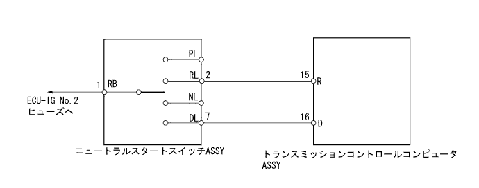
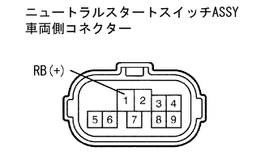
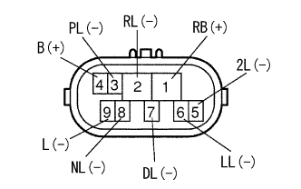
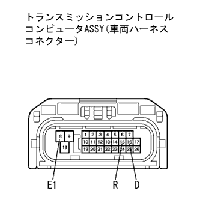

Electronically Controlled Automatic Transaxle [ECT] (U660E) Neutral Start Switch Assembly Circuit |

| Step 1 | Read TaSCAN Data (Shift Position R and D Range) |
Using SST (TaSCAN), display the [ECU Data Monitor] screen according to the screen display, and check the computer data.
| Item Name [Symbol] | Item Description/Display Range | Standard Value | Remarks |
|---|---|---|---|
| Shift Position R Range [R] | Indicates R range Display: ON/OFF | OFF → ON: Shift lever N → R | Neutral start switch (R) signal |
| Shift Position D Range [D] | Indicates D range Display: ON/OFF | OFF → ON: Shift lever N → D | Neutral start switch (D) signal |
|
| ||||
| OK | ||
| ||
| Step 2 | Inspect Wire Harness and Connector (Power Source System) |
for reference. |
Disconnect the neutral start switch assembly connector.
Turn the IG ON and, using SST (Toyota electrical tester), measure the voltage between the terminals.
| Terminal No. (Terminal Symbol) | Condition | Standard |
|---|---|---|
| 1 (RB) - Body ground | IG ON | 7.5 to 14V |
|
| ||||
| OK | |
| Step 3 | Inspect Neutral Start Switch Assembly |
 |
Using SST (Toyota electrical tester), measure the resistance between the terminals.
| Terminal No. (Terminal Symbol) | Condition | Standard |
|---|---|---|
| 2(RL) - 1(RB) | R position | Below 1 Ω |
| 1(RB) - 7(DL) | D position / M position | Below 1 Ω |
|
| ||||
| OK | |
| Step 4 | Inspect Wire Harness and Connector (Neutral Start Switch Assembly - Transmission Control Computer) |
for reference.Connect the neutral start switch assembly connector.
Disconnect the engine control computer connector.
Turn IG ON.
 |
Using SST (Toyota electrical tester), check the voltage between each terminal of the wire harness.
| Terminal No. (Terminal Symbol) | Condition | Standard |
|---|---|---|
| 15(R) - 8(E1) | R position | 7.5 to 14V |
| Other than R position | 0 to 1.5V | |
| 16(D) - 8(E1) | D position / M position | 7.5 to 14V |
| Other than D position / M position | 0 to 1.5V |
|
| ||||
| OK | |
| Step 5 | Inspect and Replace Transmission Control Computer Assembly |
Replace the transmission control computer assembly. (see)
| NEXT | ||
| ||